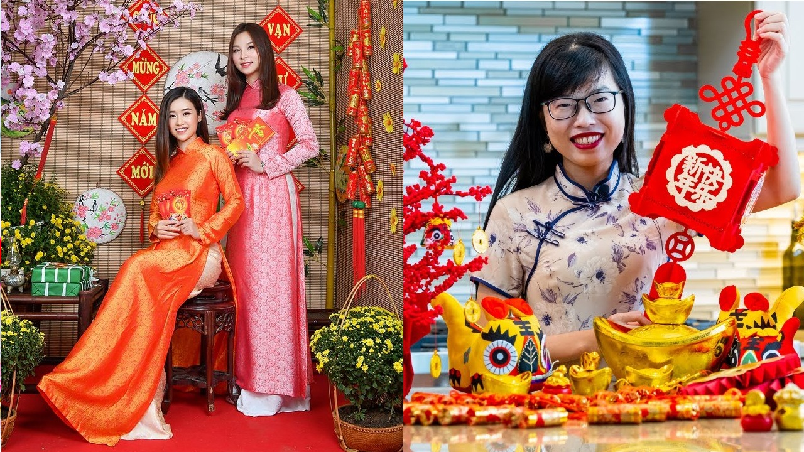
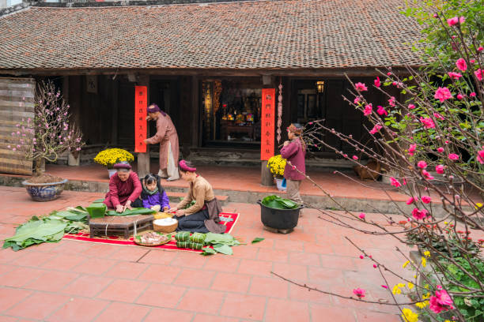
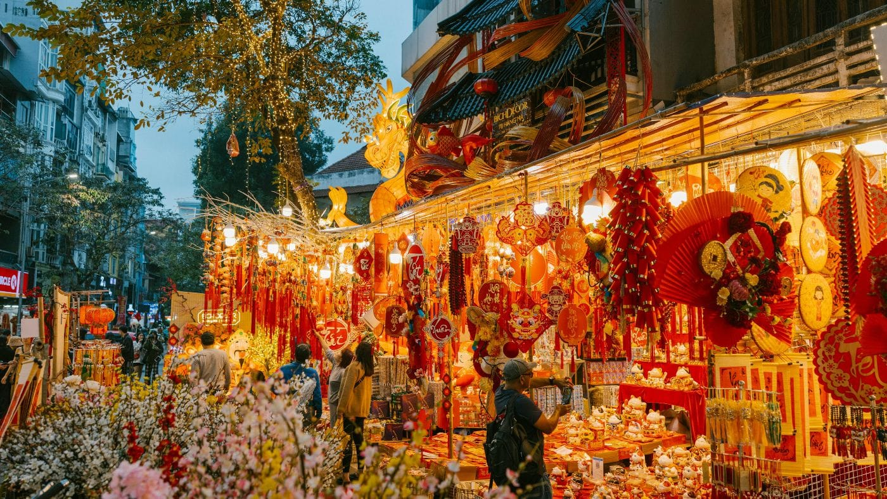
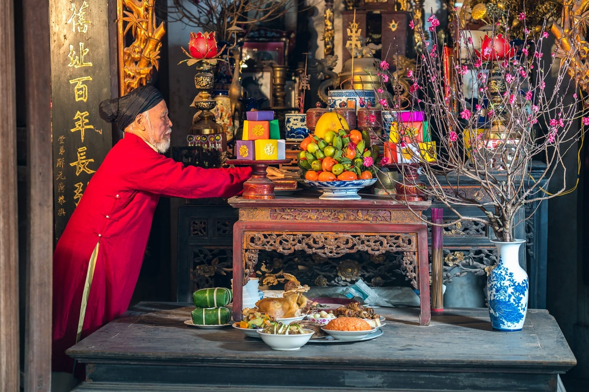
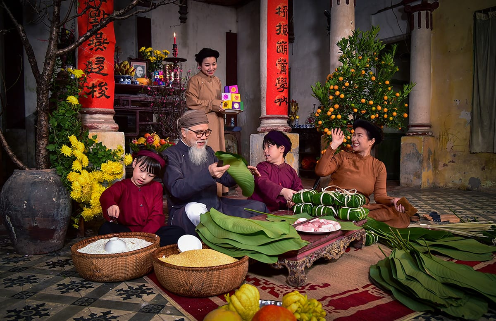
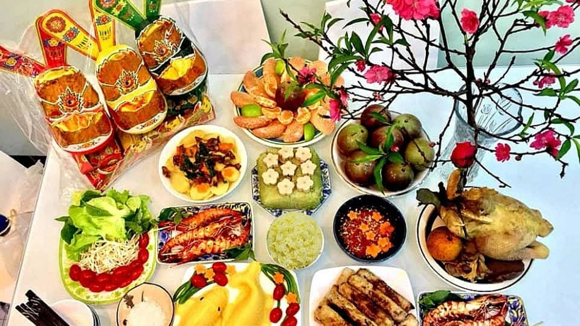
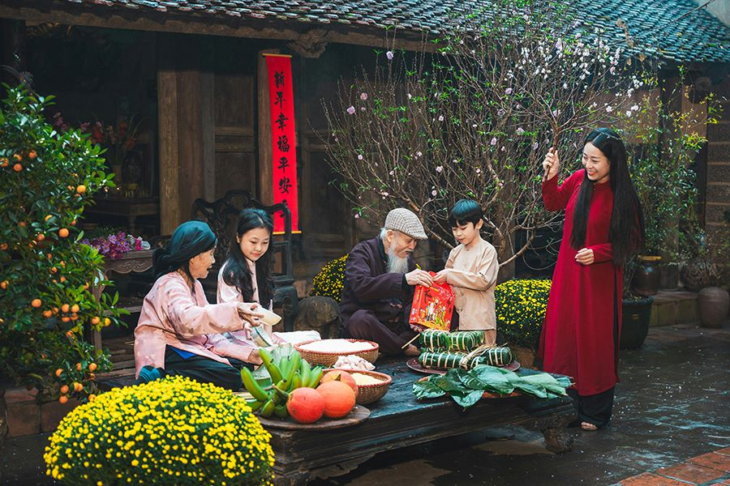
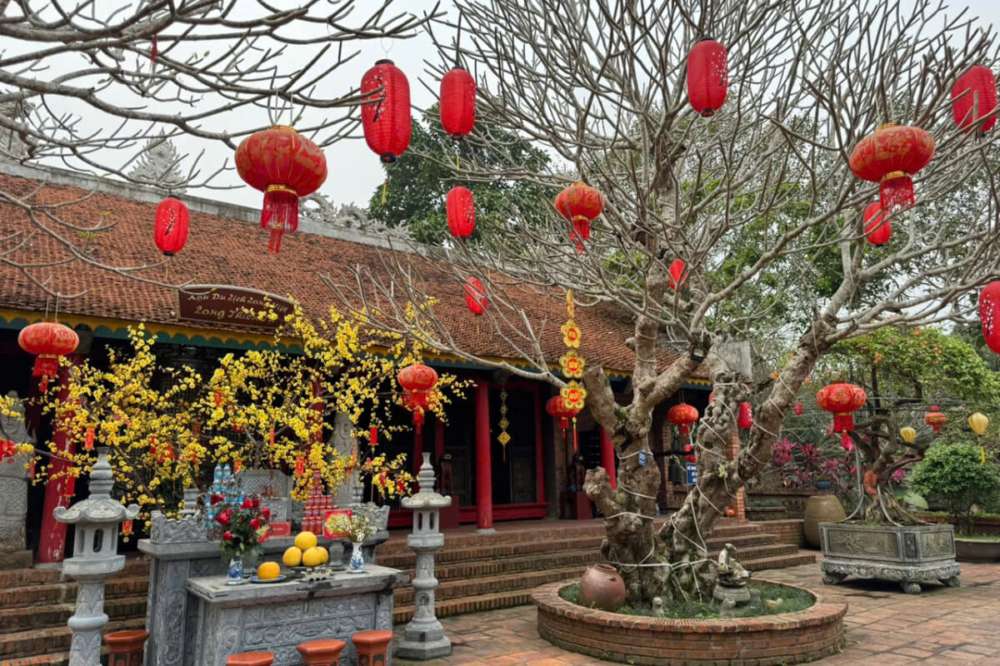

About Vietnamese Tet
Lunar New Year in Vietnam: A Celebration of Tradition and Togetherness
Tet, or the Lunar New Year, is the most important and beloved holiday in Vietnam. Not only does it mark the arrival of spring and the start of a new year, but Tet is also the time of reflecting, reconnecting with families, and honoring ancestors for a new year of prosperity and good fortune.
An Overview of the Lunar New Year in Vietnam
Lunar New Year in Vietnam, also known as Tet Nguyen Dan, plays a pivotal role in Vietnamese culture. The word “Tet” means festival and Nguyen Dan means the first day of the year. Both of these words come from Sino-Vietnamese – a linguistic mixture of Vietnamese and Chinese morphemes. The Vietnamese New Year is closely tied to Vietnam’s agrarian culture, which follows the lunar calendar, and falls between January and February. It serves as a time to pay homage to gods of prosperity and pay respects to ancestors, seeking blessings for a wealthy harvest and good fortune next year. Today, the holiday is celebrated nationwide, following the lunar calendar of mid January or late February, and usually lasts for 5 to 7 days, promoting a sense of unity through this joyous community gathering.

The Lunar New Year in Vietnam versus Chinese New Year
Many comparisons suggest that the Lunar New Year in Vietnam is influenced by Chinese customs. However, there are ancient texts, including writings by Confucius – a Chinese philosopher, that mention such festivals in the region, indicating that Tết may have indigenous origins independent of Chinese customs. These passages describe the lively gatherings, feasting, and celebrations tied to the new planting season, depicting the values believed by the Vietnamese ancestors. There are of course some similarities in terms of customs such as family reunions, decorative elements, and the exchange of lucky money. The Lunar New Year in Vietnam, however, includes instinctive style and personality that are deeply linked with the country’s identity. For example, the historical legend of “Banh Chung Banh Day,” states during the Hung Kings period, before the Chinese occupation, Vietnamese people had been celebrating the new year’s fortune.

Preparation for the Lunar New Year in Vietnam
1. Cleaning and Decorating the House In the days before the Lunar New Year, Vietnamese families will gather to clean their house. It is believed that this will sweep away any bad luck and bad energy to welcome good fortune. Then, the house itself will be decked with colorful decorations such as red banners, followers, and sometimes reorganization, symbolizing a positive fresh start. The most important decoration is the kumquat trees, peach blossoms, or apricot blossoms, tying the spirit of the new year together.

2. Shopping for Lunar New Year Shopping during the Lunar New Year is a significant experience, more than about preparing and acquiring the items themselves. Tet market is bustling and full of various products, from traditional dishes like Banh Chung (glutinous rice cake), fruits such as oranges or pomelos (symbol of prosperity), and vibrant flowers. As mentioned, the kumquat tree, cherry, or apricot blossoms are more than a decoration. They represent each household’s personality and symbol of good fortune, so people chatter, discuss, and evaluate with each other, to get the best plant for their homes. Together, it reinforces a sense of community, shared happiness, and wealth.

3. Offering to Ancestors A must-include part of the Lunar New Year in Vietnam is the altar, a place to honor the ancestors. People prepare offerings of fruits, cakes, and fresh incense to pay respects and invite their ancestors to join in the celebration. This practice emphasizes the importance of family relationships during Vietnamese celebrations. Some prominent traditions include the tradition of presenting the “five fruits” tray, or the traditional Year-End ceremony. Families visit the graves of their ancestors to pay respects, clean the gravesites, and invite their ancestors to join in the Tet celebrations. It’s a way of honoring their lineage and remembering those who came before.

4. Wrapping Banh Chung or Banh Tet (Vietnamese Sticky Rice Cake) Preparing traditional foods like banh chung (common in the North) and banh tet (common in the South) is one of unique Vietnamese New Year traditions. These are indispensable dishes during Tet. During Tet, the kitchen becomes a central gathering place, filled with the enticing aromas of these special dishes. The wrapped cakes are often shared with relatives and close friends.

Celebration of Traditions and Customs during Lunar New Year in Vietnam
1. Kitchen Gods (Ong Cong, Ong Tao) About a week before Tet, things get a little spiritual. Families hold a special ceremony to send off the Kitchen Gods— Ong Cong, Ong Tao. These aren’t just any old deities, they’re believed to live in every kitchen and keep an eye on the household. Before Tet, they take a trip up to Heaven to give a report to the Jade Emperor. It’s like a cosmic annual performance review!

2. New Year’s Eve New Year’s Eve is a pivotal time, marking the transition from the old year to the new. Families gather for a special meal, a real feast, and often head out to watch spectacular fireworks displays. Many also visit temples to pray for good luck in the coming year. It’s a time of reflection, celebration, and hope.

3. The First Visitor of the Year (“Xong Dat”) The first person to enter the house during the New Year is considered a good luck charm. The tradition known as “Xong Dat” is based on the belief that the character and fortune of the first visitor will influence the family’s prosperity and happiness throughout the year. Select guests are usually invited into the house after midnight on New Year’s Eve or during the early hours of Tết, thus, the timing is crucial. But it is also important that the guest has a good moral reputation, is considerate, and is successful in his or her endeavors, as these characteristics are credited with influencing the fate of the new year. Over time, this tradition has become an important part of the new year which encapsulates hope for a successful start to the new year.

4. New Year Greetings The first few days of Tết are all about connecting with loved ones. People visit their relatives and friends, exchange greetings, share delicious food, and strengthen those important family and community bonds. It’s a time for laughter, catching up, and enjoying each other’s company. Exchanging New Year greetings is a warm and heartfelt tradition. It’s all about wishing each other well for the coming year. You’ll hear phrases like “Chuc Mung Nam Moi” (Happy New Year), “An Khang Thinh Vuong” (Prosperity and Health), “Van Su Nhu Y” (May all your wishes come true!), “Lam An Tan Toi” (Be successful at work!) and “Tien Vo Nhu Nuoc” (May money flow in like water!) being shared with smiles and genuine warmth. These beautifully written poetic couplets, known as "cau doi, are an integral part of Tet decorations. Written in parallel structure with matching tones and meanings, they express wishes for the new year, such as good health, prosperity, and happiness. These couplets are typically written in black ink on bright red banners, creating a striking contrast and adding a touch of traditional elegance to homes and public spaces. They are often displayed on either side of doorways or altars.

5. Family Reunions Tet has become one of the most anticipated for Vietnamese people and family gatherings are the heart of this holiday. This time of year is meant to show respect for family relationships from ancestors to renewing relationships with loved ones. It encourages families near and far to come together to share warmth, happiness, and contemplation. The first few days of Tết are all about connecting with loved ones. People visit their relatives and friends, exchange greetings, share delicious food, and strengthen those important family and community bonds. It’s a time for laughter, catching up, and enjoying each other’s company.

6. Giving and Receiving “Li xi” (Red Envelopes) "Li xi" or red envelopes is a symbol of good health, and prosperity, and is believed to be a protection against bad luck. These red envelopes usually contain money and are exchanged between family, friends, and acquaintances to wish others success, happiness, and good health in the year ahead. The amount of money in the envelope is generally modest, emphasizing gestures and the goodwill they represent. Those who received the most "li xi" were children and young adults, the future generation of the family, and so older members always wished for their children a bright year ahead. On the other hand, children express their gratitude with kind words and wish the elderly good health and prosperity. This shift emphasizes the reciprocal nature of traditions where respect and blessings are shared between generations.

7. Visiting Pagodas, Temples and Churches Many people visit pagodas and temples during Tet to pray for health, happiness, and prosperity. They often make offerings of incense, fruits, and flowers, and participate in rituals that seek blessings for the new year. In addition to pagodas and temples, many Vietnamese Catholics visit churches during Tet to attend Mass and give thanks for the past year. Churches are beautifully decorated with flowers, lights, and traditional Tet elements such as peach blossoms and kumquat trees. This spiritual aspect of Tet highlights the importance of faith and gratitude in Vietnamese culture.

References: